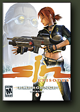

Friday, April 14 2006
 Preloading of Ritual's Sin Episode 1: Emergence continues, with thousands of gamers waiting patiently for May 10th to come around so they can start playing. It will be worth the wait, but until then we have a couple of screenshots from the game to share. Preload the game and be ready to play with everyone else when the game comes out.


Here at Valve, we've finalized the commentary tracks we'll be releasing along with Half-Life 2: Episode One. When you start up a new game you'll have the option to play with commentary enabled, which means there will be usable nodes in the world for you to learn about what went into building the game. Looks like we'll end up with over 100 total nodes and about one hour of total spoken commentary. The community response to the commentary system in Lost Coast drove a lot of our thinking while creating it, so we hope everyone enjoys it when they are playing Episode One.
Most people have also probably noticed that the Friends system is currently quite functional in Steam, but still in beta. You can try out the beta now; your list of friends will still be there after the beta period has ended.